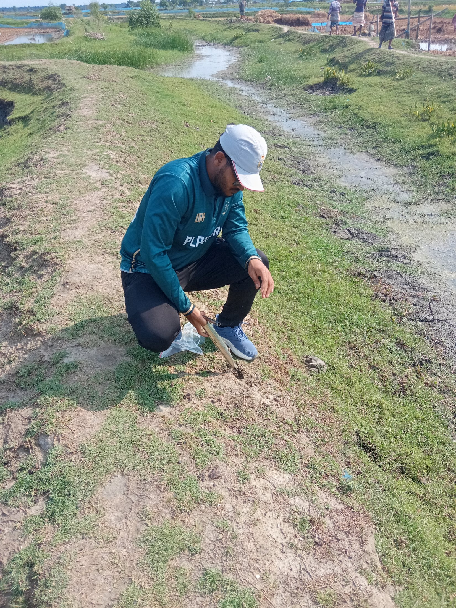
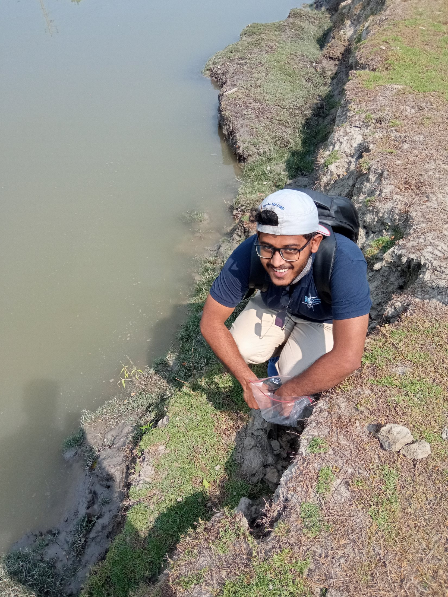
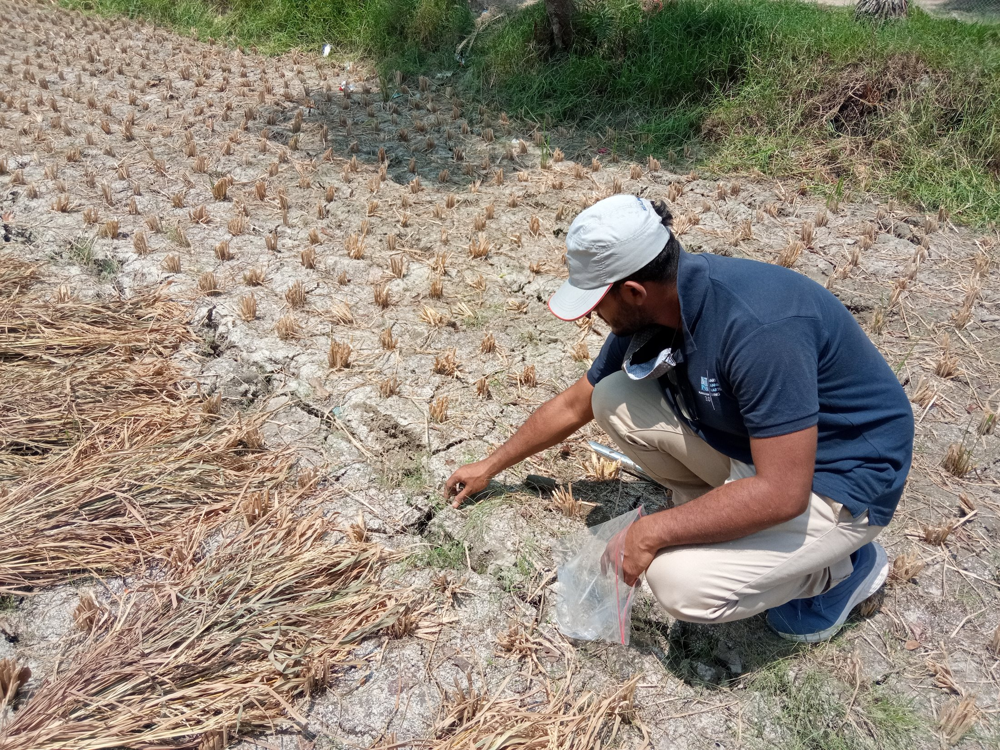
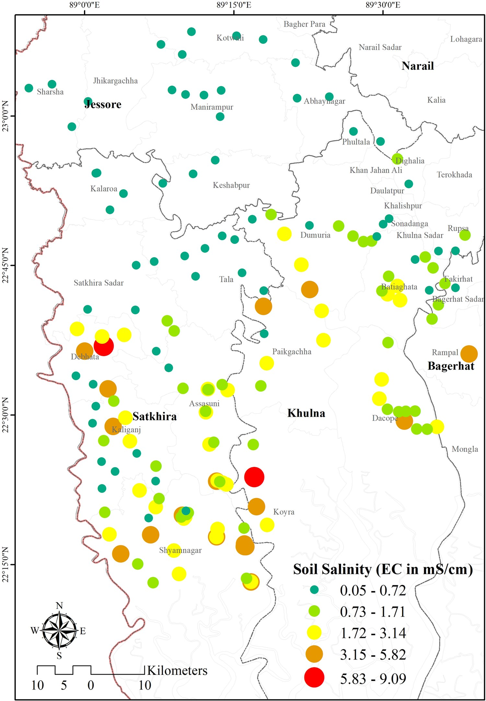

Field surveys
Collecting georeferenced soil and water observations across climate-exposed coastal landscapes.
Project Sonar Bangla · KUET × MIT Earth Signals and Systems Group
River and soil salinity field research across southwest coastal Bangladesh—connecting ground observation, laboratory evidence, GIS modeling and community engagement to climate adaptation.
01 · The collaboration
Project Sonar Bangla examines climate hazards, exposure, vulnerability and adaptation in Bangladesh. Within this wider effort, the KUET-based river and soil salinity campaign built an on-the-ground evidence base for understanding how salt exposure is reshaping arable landscapes and water systems in the southwest coast.
“From climate hazards to action” became a practical research chain: reach the field, document conditions, measure salinity, map spatial patterns and translate evidence for adaptation.Project framing
02 · My role
The project certificate documents Tanzim’s service as an Undergraduate Research Assistant and his active contributions in four areas.
Collecting georeferenced soil and water observations across climate-exposed coastal landscapes.
Supporting the controlled preparation and electrical-conductivity assessment of collected samples.
Organizing sampling geography and interpreting salinity patterns through spatial visualization and modeling.
Working in inhabited agricultural environments where climate risk directly intersects livelihoods and land management.



03 · Research design

Coordinate routes, site identifiers, equipment and field teams across a large coastal study region.
Take topsoil samples from open and fallow arable land while recording site coordinates and field context.
Prepare soil-water mixtures at 1:5 and measure electrical conductivity using a standardized laboratory protocol.
Visualize observed salinity spatially to support reusable climate-risk evidence and regional decision-making.
04 · Published outcome
The 2024 campaign produced a peer-reviewed data descriptor in Nature Portfolio’s Scientific Data. Tanzim is a co-author of the published paper, which documents the sampling design, laboratory protocol, data records and spatial salinity pattern.

05 · Project arc
KUET and MIT ESSG engagement supported a coordinated soil-salinity field campaign across southwest Bangladesh.
Laboratory analysis, GIS modeling and subsequent river-and-soil observations extended the field evidence base.
The topsoil observatory was published in Scientific Data, making the documented dataset accessible for future research and planning.
Why this project matters
This experience joined international climate-science mentorship with locally grounded field practice and strengthened Tanzim’s research direction in GIS, environmental modeling and climate-resilient planning.